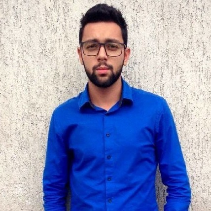

Apaixonado por tecnologia. Técnico em TI, formado em redes de computadores e agora cursando o 3º semestre em Gestão de T.I na UNIP.
Focado em aprofundar meu conhecimento, concorri com mais de 2 mil candidatos e fui aprovado para o Bootcamp da Generation Brasil para Desenvolvimento Web Java Jr. Encontrei na tecnologia a minha forma de mudar o mundo.
